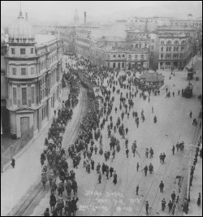
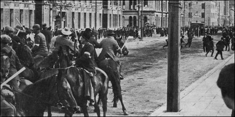

Workers unite, farmers fight!
I’ve usually felt no desire to study the history of New Zealand. The country is too young, and it seems like nothing happened here. But recently Tim Sterne put me onto the Penguin History of New Zealand and its account of the waterside workers’ strikes in Wellington, 1913. [1] Soon after I began reading I was thinking, “This is almost as good as fiction! They should make it into a movie.”
In the eight years from about 1905, tensions within industrial relations took New Zealand from relative peace to the brink of civil war. [2]
In the early 1900s, industry was more or less peaceful. Most workers were happy being part of the 1894 Industrial Conciliation and Arbitration Act (ICAA). Its role was to solve arguments between employer and worker in a “let’s talk about this” fashion. And in 1905 the Act was modified, making strikes illegal.
One of the first real tests of the Act came in 1908, with the “tucker-time strike”. Seven coal miners in Blackball (a small town near Greymouth) started protesting about their lunch break: 15 minutes maximum. Words weren’t getting them very far, so one day they simply decided to stop for a full half hour. Their bosses promptly sacked them. The Blackball Coal Miners’ Union, who had registered under the new Act, responded by going against their registration commitments and calling a full strike. It lasted until the mine owners relented, gave them their 30 minutes tucker time, and reinstated the sacked men.
But there was more at stake than a half-hour lunch break. The moral of the story, for the union-lovers and socialists, was that strikes work far better than any arbitration. [3]
From about this point on, more and more workers left the ICAA’s arbitration system. They wanted action, not some paperwork-swamped committee. Many joined the much more militant New Zealand Federation of Labour (known as the “Red Feds” because of their almost-communistic ideals).
In 1912 both sides turned up the heat. Gold miners in Waihi began a months-long strike that ended in big fights between workers and “scabs” (non-union labourers called in to replace strikers). Before the strike ended, ten percent of the country’s police were called in, one policeman and one “scab” were shot, and a unionist was beaten to death.
It seems that neither side had learned their lesson, for during 1913 a total of about 15,000 workers were involved in strikes. In May, a group of 40 Wellington shipbuilders cancelled their ICAA registration and joined the Wellington Waterside Workers’ Union, which soon demanded a good number of bonuses for them. Their bosses weren’t very impressed with the Workers’ Union, and promptly cancelled their travelling allowance. The shipbuilders went on strike, of course. Striking didn’t help the already-edgy vibe, so before long 1500 waterfront workers stopped work to have a union meeting. The employers said this broke their contract, and called a lockout (a kind of strike, but started by the employers: “You’re no longer working here, thank you!”).
So the Wellington Wharves were shut. Auckland and Lyttelton waterside workers joined the strike in sympathy, and soon all New Zealand ports were closed.
Wellington workers broke through the barriers barring them from the wharves and, in the understated words of the day’s Dominion, “The demeanour of the strike had completely changed.” Riots began. Shop windows were smashed. Strikers were told they couldn’t use the Basin Reserve for a protest meeting, so they responded by smashing down its main gates.

Like the Waihi strike, these new strikes weren’t really about better hours or more pay; they were a large-scale power play. (In fact, “British sailors in port were sympathetic until they learned the strike was not over wages or hours, but over a matter of principle. [4]) Who would have the say – the workers or their bosses? Unions or employers? Socialists or capitalists?
Now the government started to get serious. Huge numbers of police were called in, but were overwhelmed by the thousands involved in the skirmishes. Prime Minister William Massey, who was not at all friendly with the unions, called in over a thousand farmers to act as both substitute workers and special police. At the very least the farmers were armed with heavy batons, and most came on horseback. Tension mounted.
Auckland took similar action, adding secret gatherings to the mix. President of the Auckland Farmers’ Union, D. H. Lusk, sent a confidential message to all nearby farmers, calling for secret meetings to be held in every country centre, to “enrol all those who consent to take an active part in the work abandoned by the waterside workers”.
Up and down the country, the addition of farmers seemed only to fuel the fire. Wellington’s Royal Tiger Hotel had housed some of them and, hearing of this, strikers smashed all its windows. More riots began. Firearms started to appear. The British Navy’s HMS Psyche was even seen threateningly polishing her big guns.
At one point a Dominion journalist, Pat Lawlor, witnessed gunfire going in both directions, but Police Commissioner John Cullen, very much in favour of the special police, censored his story. The newspaper’s editor removed all reference to the farmers’ use of guns.
Finally, after clashes in all three major ports, and events knife-edging between tense unrest and all-out combat, the unionists were defeated. Police began to arrest strike leaders as soon as they felt it was wise. The unions conceded defeat on December the 19th.
Defeated in the strikers’ battle, the unionists turned their energies to political action. Some of the key leaders of the 1913 strikes, having “learned the hard lesson that the labour movement could not achieve its goals through industrial action alone,” went on to help form the New Zealand Labour Party in 1916. [5]
Personally, while I disagree with the ethics of large unions, I believe both sides went too far. In an effort to unite workers against employers, many of the strike leaders delivered some very militant speeches. As for leaders in government, perhaps they had to be decisive, but they knew the farmers were already biased against the unions. It was not asking for peaceful resolution to call them in – and when they rode away, it was with even greater dislike of the union-oriented city workers. This was a dislike that would help shape New Zealand politics and town-country relations for many decades.
Ben Hoyt was born in Atoka, Tennessee, USA (pop. 5,000).
Footnotes
[1] Apart from the Penguin History, I gleaned much of the content for this article from the first essay in Revolution: The 1913 Great Strike in New Zealand by Melanie Nolan.
[2] A rather weighty claim, but one that’s well justified by both events and sources.
[3] Partly because Prism is a magazine and not a journal, and partly because I’m not a political historian, I’m probably over-simplifying here. But dig into Nolan’s book if you want the full picture.
[4] From Wellington: A Capital Century by David McGill, p. 46.
[5] From Prime Minister Helen Clark’s speech at the launch of Melanie Nolan’s Revolution.